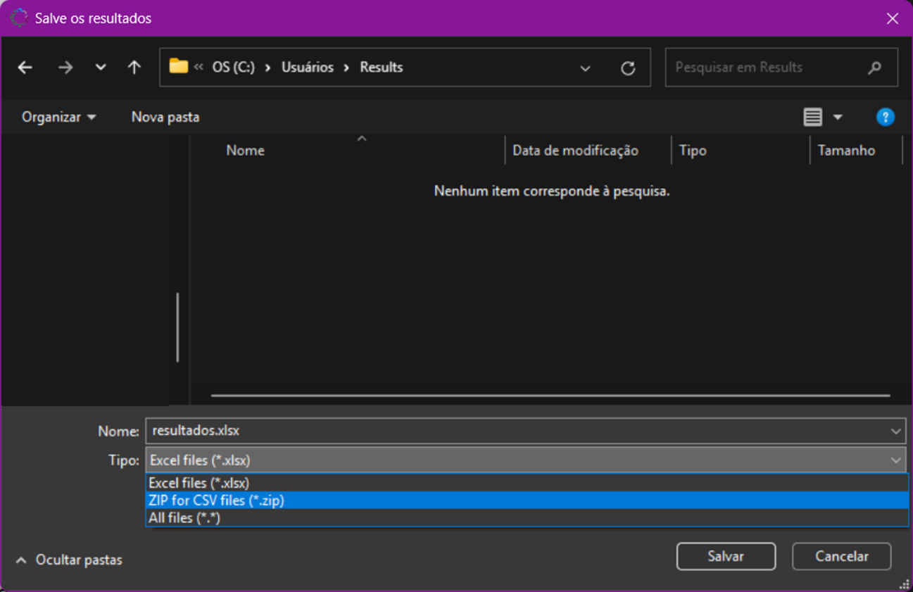

MANUAL eDNAnalyzer
MANUAL eDNAnalyzer
eDNAnalyzer é uma ferramenta computacional de fácil uso e acesso aberto, desenvolvida para processar e filtrar dados de atribuição taxonômica provenientes de estudos de metabarcoding, especialmente aqueles derivados de DNA ambiental (eDNA) e DNA derivado de invertebrados (iDNA).
Como citar o eDNAnalyzer?
Olimpio, L.W.G.F.; Gestich, C.C.; Saranholi, B.H.; Galetti Jr, P.M.; Freitas, P.D. 2025. eDNAnalyzer: a user-friendly computational tool for post-processing taxonomic assignment data derived from eDNA and iDNA metabarcoding (doi: )..
Como acessar o eDNAnalyzer?
Você pode encontrar a ferramenta eDNAnalyzer acessando o repositório no GitHub em https://github.com/Leo-9821/eDNAnalyzer.
O arquivo executável (.exe) está disponível para Windows®, enquanto o código-fonte em Python (.py) pode ser usado para executar o programa em Linux® ou macOS®. Neste caso, baixe os arquivos "main.py" e "metabar.py" e a pasta "img" para o mesmo diretório em seu computador e certifique-se de instalar as bibliotecas pandas, Pillow e openpyxl.
Como o eDNAnalyzer funciona?
O software oferece duas funções principais: "Aplicação do Threshold" e "Consolidação de Resultados", cada uma exigindo um arquivo de entrada específico. Exemplos de arquivos de entrada e saída estão disponíveis no repositório https://github.com/Leo-9821/eDNAnalyzer/tree/master/example_files.
Uma visão do funcionamento geral do programa, é fornecida ao final deste manual, juntamente com instruções detalhadas para realizar as duas funções principais: “Aplicação do Threshold” e “Consolidação dos Resultados”.
Escolhendo a opção Aplicação do Threshold
Esta opção processa dados de atribuições taxonômicas prévias, calculando o número total de reads por OTU/ASV por amostra de sequenciamento, filtrando OTUs/ASVs de acordo com um valor do threshold adotado (padrão ≥ 0,05%) e gerando saídas após a aplicação dos filtros selecionados.
Visão geral do processo:
- Calcular o número total de reads por OTU/ASV por amostra de sequenciamento, com base nas atribuições taxonômicas fornecidas.
- Filtrar OTUs/ASVs de acordo com um valor de corte adotado (padrão: ≥ 0,05%).
- Gera arquivos (arquivos de saída) contendo o número total de reads por OTU/ASV, as OTUs/ASVs que não passaram no limiar e as OTUs/ASVs que passaram.
Arquivo de entrada:
Um arquivo em formato .xlsx ou .csv (exemplo: input_exemplo.xlsx), contendo os dados de atribuição taxonômica, deve ser fornecido com as seguintes colunas obrigatórias:
- ● amostra_sequenciamento (identificação das amostras de sequenciamento)
- ● area_amostrador (indicando a área de coleta e o amostrador de DNA – por exemplo, amostra de água, solo, invertebrado utilizado como amostrador. Garanta que áreas e amostradores sejam identificados sem ambiguidade para evitar erros. Use um underscore para separar a área do coletor: area_amostrador)
- ponto (indicando o ponto de coleta)
- n_reads (número de reads por OTU/ASV)
- taxon (táxon determinado a partir da atribuição taxonômica)
Colunas adicionais com informações extras também podem ser incluídas, conforme mostrado na Tabela 1.
Tabela resumo de um arquivo de entrada mostrando as informações gerais para a etapa de aplicação do threshold.
Arquivos de saída:
Todas as tabelas podem ser salvas em formato .xlsx e .csv. Veja um exemplo de arquivo gerado nesta etapa na Tabela 2.
Tabela 2: Tabela resumo de um arquivo de saída mostrando os dados processados após a execução da etapa de aplicação do threshold.
Escolhendo a opção Consolidação dos Resultados
Este processo fornece tabelas com os resultados, listas de espécies com seus números de detecções e reads. As tabelas podem ser geradas separando as listas por amostrador, área ou ambos.
Visão geral do processo:
- Edite a tabela contendo as OTUs/ASVs de interesse, preenchendo a coluna taxon_final_curada com a atribuição taxonômica selecionada após curadoria manual. Esta etapa visa revisar e refinar a identificação taxonômica para corrigir possíveis inconsistências, incorporando dados de distribuição de espécies e observações de campo para maior precisão.
- Insira a tabela curada (arquivo de entrada) no eDNAnalyzer. O programa processará os dados e retornará as informações de interesse de acordo com os filtros selecionados pelo usuário (por exemplo: amostrador, área ou ambos).
- Gera arquivos com resultados consolidados em formatos .xlsx e .csv. Quando necessário, arquivos .csv em arquivo .zip serão fornecidos.
Arquivo de entrada:
A tabela de entrada (Tabela 3) para a etapa de consolidação de resultados é uma tabela (em formato .xlsx ou .csv) contendo os dados de taxon final da etapa anterior de aplicação de threshold e a lista de taxon curada.
Tabela 3: Tabela resumo de um arquivo de entrada mostrando as informações gerais para a etapa de consolidação.
Arquivos de saída:
Todas as tabelas podem ser salvas em formatos .xlsx e .csv. Veja um exemplo de arquivo gerado nesta etapa na Figura 1.
Figura 1: Tabela resumo de um arquivo de saída mostrando os resultados consolidados após a execução da etapa de consolidação.
Observe que a lista de táxons é apresentada de acordo com o filtro selecionado em diferentes guias da planilha.
Funcionamento Geral do Programa eDNAnalyzer
Após acessar o programa em https://github.com/Leo-9821/eDNAnalyzer, siga as etapas clicando nas opções disponíveis.
Etapa 1: Selecione o idioma
Etapa 2: Leia o manual e escolha uma das duas opções de processamento
Etapa 3: Escolha a opção "Aplicação do Threshold".
Etapa 4: Carregue um arquivo contendo os dados de atribuição taxonômica
Etapa 5: Verifique o diretório fornecido para garantir que o arquivo foi carregado corretamente.
Etapa 6: Insira um valor do threshold em porcentagem ou deixe vazio para usar o padrão (0,05%) e execute a etapa de Aplicação do threshold.
Etapa 7: Após a execução, três arquivos de saída serão gerados, contendo respectivamente:
(i) o valor do threshold calculado por amostra de sequenciamento, (ii) as OTUs/ASVs com reads abaixo do limiar e (iii) as OTUs/ASVs com reads iguais ou acima do limiar. Salve pelo menos o último arquivo em .xlsx ou .csv para usar para a curadoria manual e entrada na etapa de consolidação.
Etapa 8: Escolha a opção "Consolidação de Resultados".
Etapa 9: Carregue um arquivo contendo a tabela curada após a aplicação do threshold.
Etapa 10: Verifique o diretório para confirmar o carregamento correto do arquivo.
Etapa 11: Selecione as opções para filtrar os dados por coletor e/ou área.

Etapa 12: Se selecionou a opção "Amostrador", digite os IDs dos coletores, separando-os com a tecla "Enter". Se você não selecionou “Amostrador”, deixe o campo em branco.
Etapa 13: Salve as tabelas geradas com os dados filtrados.
Para compactar todas as tabelas em .csv em um único arquivo .zip, selecione a opção ZIP. Assim, você salvará os resultados consolidados com a lista final de táxons e as informações sobre o número de reads que cada táxon apresentou e o número de vezes que foi detectado.
